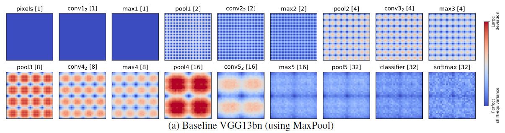

本文讨论了关于下采样所带来的平移等变性被破坏的情况，并提出通过整合经典的抗锯齿操作来提升网络的平移等变性，进而提升平移不变性。(在后面的层中，平移不变性等于平移等变性)
这文章通篇证明了一件事：CNN 下采样导致的混叠会降低性能(之前也有文章说过)，我们建议在下采样之前加低通滤波。
文章的工作量很大，尤其是在很多应用方向都做了实验，说明了移不变的CNN可以在相关方向获得更好的性能。
2019 年 ICML 有哪些糟糕的论文？ - SuperMHP的回答 -
先解释两个概念 平移不变性：指的是输入平移一定距离，最终的结果不变，分类里面就是分类的概率结果是不变的。 平移同变性：指的是输入平移一定距离，其对应的 feature 也做同样的平移。 本文主要是针对特征的平移同变性去解决问题，而实际上实现了特征的平移同变形，后面接的是 fc 层，最后一层的平移不变性是等价于平移同变性的，所以实现了特征的平移同变性就是实现了整个网络输出的平移不变性。例如，vgg 网络的最后两层是 fc 层和 softmax，显然 fc 层的 spatial dim 只有唯一一个元素(高维向量)，所以平移不变性和平移等变性在这一层是等价的。
[论文理解] Making Convolutional Networks Shift-Invariant Again
0. Abstract
- 现代 CNN 没有移不变性，输入的很小的平移都可能造成输出的剧烈变化。
- Pooling 和步长大于1的卷积等下采样手段，忽略了采样定理。
个人理解这句话的意思是：pooling 和 strided-convolution 后的结果，不满足奈奎斯特采样定理，即输入频率较高，采样频率太低，造成信息损失很大。
- 不能简单地在网络结构中插入低通滤波。
1. Introduction
- 在对信号下采样前，对信号进行低通滤波来抗锯齿是教科书式的操作。
- 否则，高频分量会混叠进低频分量。（因为不满足采样定理）
- 早期网络采用的 average pooling 是一种形式的模糊后下采样。
- 经过观察，我们把 max pooling 分成 max 和 pooling 两步。
- 有一种担忧是，过度使用滤波会造成严重的信息损失，降低性能。
- 本文具体操作
- 整合经典的抗锯齿操作来提高深度网络的平移等变性。
- 在不同网络结构上测试了 max pooling，average pooling, 带步长卷积 等下采样操作，并在不同任务上进行了测试。
- 发现增加了抗锯齿操作后，accuracy 不降反升，且泛化性能也更好了。
2. Related Work
- 近来很多工作涉及了旋转，光照和尺度的不变性，这里我们专注于平移不变性。
- Simioncelli 等人的工作认为，进行下采样时，严格意义的平移等变性 (shift-equivariance) 是不成立的。
- 当特征被 densely extracted 时，平移等变性是可被恢复的。(意思是采样频率够高？)
- 深度网络也可以通过去除 stride 来达到 dense 的效果，但这会使计算量剧增，不合适。
- 因此，本文研究通过在下采样之前进行模糊的方法来提高平移等变性。
- 早期网络是使用 average pooling 的，但是后来由于 max pooling 的效果更好，因此 max pooling 更流行。
3. Methods
3.1. Preliminaries
- N-周期 平移不变性/等变性
- 环状卷积和平移来获取边界的内容。
3.2 Anti-aliasing to improve shift-equivariance
- 传统的降低空间分辨率的方法都会打破平移等变性。
- 将 max pooling 拆解为 max 和 pooling 两步操作。
- max 保留了 平移等变性。
- 后续 pooling 破坏了平移等变性。
- 提出
- MaxPool -> MaxBlurPool
- StridedConv -> ConvBlurPool
- AveragePool -> BlurPool
4. Experiments
4.1. Testbeds
- CIFAR Classification
- ImageNet Classification
- Conditional Image Generation
4.2. Shift-Invariance/Equivariance Metrics
理想情况下，输入的偏移会导致特征图的相同偏移。评价指标为：
- Internal feature distance.:
- Classification consistency: 同一张图做两种平移，输出同样结果的频率。
- Generation stability.
4.3. Internal shift-equivariance

- 内部特征距离被看作偏移量和层数的函数。
- 在第一次下采样
max1前的所有层，都是平移等变的，一旦发生下采样pool1，平移等变性就被破坏了。 - 但是，如
pool1中的 stippling pattern 所示，N-周期的平移不变性仍然成立，且每下采样一次，N 翻番一次。 - heatmap 中的每个像素代表一个偏移
- 在 pool5, 分类器和 softmax 层中，等变性和不变性是一个东西，因为特征没有空间维度。